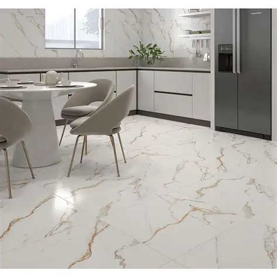
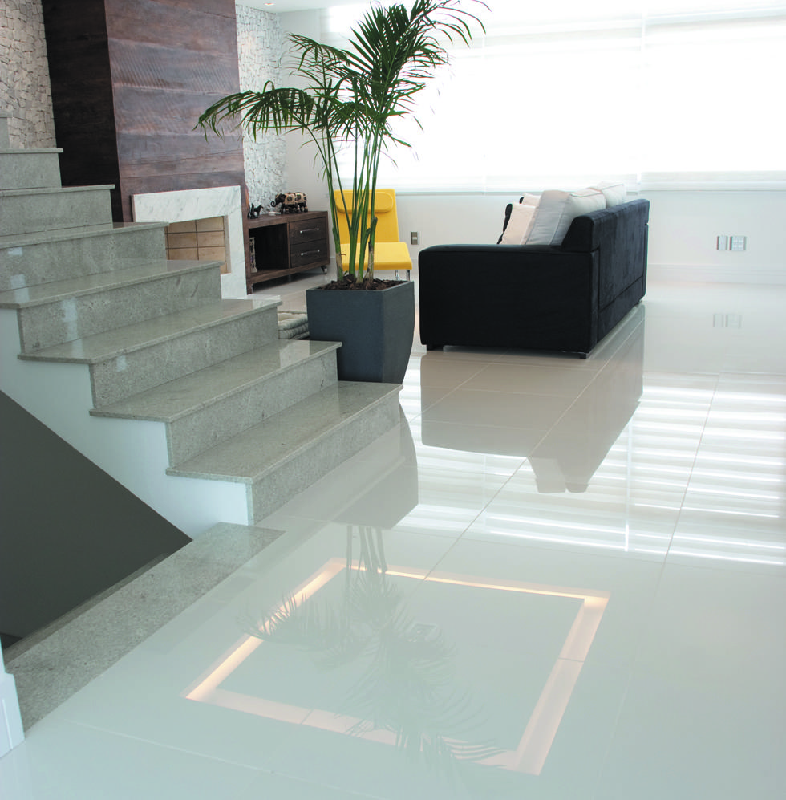
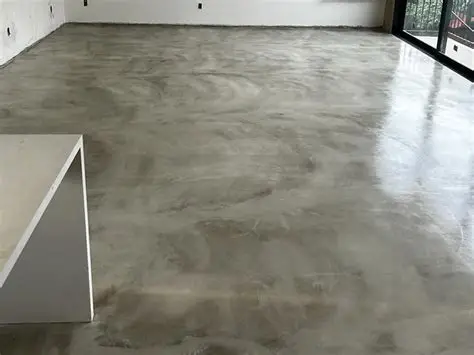

Publicado em:
Como escolher entre piso cerâmico, porcelanato ou cimento queimado

Na hora de construir ou reformar, uma das maiores dúvidas é: qual piso escolher? Afinal, ele influencia diretamente na estética, no conforto e até na durabilidade do ambiente. Entre as opções mais populares estão o piso cerâmico, o porcelanato e o cimento queimado. Cada um tem vantagens e desvantagens que precisam ser analisadas com calma. Neste artigo, vamos comparar os três tipos, explorar seus subtipos e mostrar em quais situações cada um é mais indicado. No final, você terá mais clareza para decidir qual se encaixa melhor no seu projeto.
Piso cerâmico
O piso cerâmico é um dos mais tradicionais e acessíveis no mercado da construção. Ele está disponível em uma enorme variedade de cores, tamanhos e acabamentos.
- Preço médio: varia de R$ 25 a R$ 80 por m², dependendo do design e da marca.
- Durabilidade: bastante resistente a riscos e impactos, desde que bem instalado.
- Indicação: muito usado em cozinhas, banheiros, áreas de serviço e ambientes externos.
- Pontos positivos: preço acessível, variedade de modelos, fácil limpeza e resistência à umidade.
- Pontos negativos: pode ser escorregadio quando molhado e, em alguns modelos mais baratos, pode perder brilho com o tempo.
Subtipos de piso cerâmico
- Esmaltado: recebe uma camada de esmalte colorido, oferecendo mais variedade de design.
- Natural: sem esmalte, tem acabamento mais rústico e é menos escorregadio.
- Monoporosa: absorve mais água, indicado para áreas internas e secas.
- Biporosa: possui maior resistência e pode ser usado em áreas úmidas.
Porcelanato
O porcelanato é conhecido por seu acabamento sofisticado e elegante, sendo um dos pisos mais desejados atualmente. Pode ser encontrado em diferentes texturas: polido, acetinado, rústico, entre outros.
- Preço médio: varia de R$ 80 a R$ 250 por m², dependendo da categoria.
- Durabilidade: extremamente resistente, pode durar décadas se bem cuidado.
- Indicação: ideal para salas, quartos, escritórios e áreas internas com design sofisticado.
- Vantagens: beleza estética, ampla variedade de acabamentos, fácil manutenção e alta durabilidade.
- Desvantagens: custo elevado, instalação mais cara e exige mão de obra especializada. Alguns modelos polidos também podem ser escorregadios.
Subtipos de porcelanato
- Polido: muito brilhante e elegante, ideal para salas e quartos, mas pode ser escorregadio.
- Acetinado: com brilho suave, elegante e menos escorregadio que o polido.
- Rústico: mais áspero, indicado para áreas externas e molhadas, como varandas e piscinas.
- Técnico: não recebe esmalte, possui alta resistência e é ideal para locais de grande circulação.
- Esmaltado: recebe uma camada de esmalte colorido, oferecendo grande variedade de estampas e texturas.
Cimento queimado
O cimento queimado vem ganhando cada vez mais espaço por seu estilo moderno e rústico. É muito usado em projetos minimalistas e industriais, além de ser uma opção econômica.
- Preço médio: em torno de R$ 20 a R$ 50 por m², quando feito com argamassa pronta ou mistura artesanal.
- Estilo: moderno, clean e versátil. Combina com madeira, vidro e metais, trazendo um ar contemporâneo.
- Vantagens: preço acessível, aparência única, fácil de limpar e grande durabilidade.
- Desvantagens: se a aplicação não for bem feita, pode rachar ou manchar. É frio ao toque e pode não agradar quem gosta de ambientes aconchegantes.
Subtipos de cimento queimado
- Tradicional: feito com cimento, areia e água, possui aspecto rústico e natural.
- Pronto em pó: vendido em sacos, basta misturar água para aplicação, garantindo mais praticidade.
- Resina ou polímero: mistura de cimento com resinas, garantindo maior resistência e menos rachaduras.
- Autonivelante: cria uma superfície lisa e uniforme, muito usado em áreas maiores.
Qual o melhor para cada caso?
Não existe um piso “melhor” em todas as situações, e sim aquele que se adapta ao seu estilo de vida e orçamento:
- Piso cerâmico: indicado para quem busca economia, praticidade e resistência em áreas molhadas.
- Porcelanato: ideal para quem deseja sofisticação, requinte e durabilidade em ambientes internos.
- Cimento queimado: perfeito para projetos modernos, industriais ou minimalistas, além de ser uma alternativa econômica.
Conclusão
A escolha do piso vai depender do equilíbrio entre estilo, praticidade e orçamento. Se a ideia é economizar, o piso cerâmico cumpre bem o papel. Já para quem busca requinte, o porcelanato é a opção mais completa. E para quem deseja modernidade sem gastar muito, o cimento queimado é uma ótima aposta. Analise suas prioridades e escolha o que melhor combina com o seu projeto.
Veja também: Quanto de tinta ou piso usar por metro quadrado